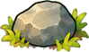
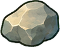
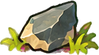
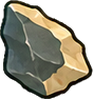

风栖原野 V0.3.1 · 地图自然资源
2026-10-17 · Godot 4.7.2 Stable · natural-resources-0.3.1
正式逻辑已接入24张画稿仍待确认正式试玩：根目录 Start-Playtest.cmd；美术试玩：Start-Items-Preview.cmd。WASD / Shift移动，E采集或拾取，B背包，Ctrl+右键放下1个，F7资源分布与临时Seed。
正式入口暂用“临·名称”原生符号，木材保留原已确认图。右侧是真实地图同Seed、同位置的新开预览世界，不是另一个生成器；未将候选升级为正式美术。下方24图仅为验收目录，松果没有可信针叶树来源，当前不自然生成。
五处地图 · 24张画稿 · 专项验证 · 原始美术QA与限制
出生区域
Seed 271828 · (20152, 14254) · 区块(17, 12)
森林
Seed 271828 · (11241, 16271) · 区块(9, 14)
草原
Seed 271828 · (15918, 20822) · 区块(13, 18)
山地
Seed 271828 · (17580, 25690) · 区块(15, 22)
水岸
Seed 271828 · (25353, 25682) · 区块(22, 22)
现有候选画稿 · 独立场景形态 / 背包图标
复用已生成素材，无新图片调用、无树石或地表重绘。AtlasTexture增加8源像素透明安全边，保持场景内容宽度及脚底；来源、原PNG和原失败/警告报告均保留。此目录不代表自然生成的布局。
野生浆果 · 场景 / 背包
wild_berry · pending_user棕蘑菇 · 场景 / 背包
brown_mushroom · pending_user野胡萝卜 · 场景 / 背包
wild_carrot · pending_user野苹果 · 场景 / 背包
wild_apple · pending_user木材 · 场景 / 背包
wood · pending_user树枝 · 场景 / 背包
branch · pending_user

stone · pending_user植物纤维 · 场景 / 背包
plant_fiber · pending_user

flint · pending_user宽叶 · 场景 / 背包
broad_leaf · pending_user松果 · 场景 / 背包
pine_cone · pending_user野花 · 场景 / 背包
wildflower · pending_user
最小专项验证
生成与状态：5434项 / 0失败；真实渲染与交互：29项 / 0失败；独立进程写档/重启：2 + 4项；移动/砍树必要依赖：22项 / 0失败；临时Seed/晴雨必要检查：5项 / 0失败。最终日志与JSON可在本目录复查。
| Seed | 抽样区块 | 自然资源点 | 整块留空 | 出生镜头可见 | 首次导航 ms |
|---|
| 271828 | 51 | 269 | 1 | 2 | 1685.8 |
| 447349832 | 45 | 268 | 1 | 1 | 1353.2 |
| 1671081329 | 54 | 337 | 1 | 2 | 795.0 |
抽样偏向各生态核心，不能外推为全世界平均密度。已验证冷缓存/逆加载顺序、跨块间距、水域与树石脚底、采集过滤、部分拾取数量守恒、满包保留、独立丢弃、旧档迁移、原地图地形与树石未改变；没有执行无关全量回归。
已加载水岸180帧、60FPS限帧样本：中位 16.666ms，P95 16.737ms，最大 16.869ms；本次跨位置挂载峰值 6.136ms；静态内存 68.75MiB。含帧等待，不是全地图压力测试或所有Seed的性能保证。
美术检查与保留限制
已目视检查原始24格、独立植物、五类环境实景和边缘。场景生长图不是背包图标放大；根部无统一黑椭圆。小石块在山地纹理中的辨识、植物底缘的绿叶颜色、斜俯视统一程度、苹果来源树的视觉身份仍须用户验收。未宣称所有画稿已满足审美要求。
旧原图跨格失败经过所有权重排处理，当前安全边由运行时留白解决；以下原始数值照录，不能把处理QA或增加留白等同于用户通过：
art\items-v03\spill-01\sheet-qc.json · cross_cell_components · fail · value=7 / threshold=0art\items-v03\spill-01\sheet-qc.json · cross_cell_visible · fail · value=7 / threshold=0art\items-v03\spill-01\sheet-qc.json · boundary_band · warn · value=3392 / threshold=0art\items-v03\spill-01\sheet-qc.json · safe_frame · warn · value=23 / threshold=0art\items-v03\spill-02\sheet-qc.json · safe_frame · warn · value=14 / threshold=0
本轮没有图片生成，既有路线为受控 route_media → Codex (local CLI)；原底层精确图片型号/实际费用未知。doctor的可选视频/科学依赖缺失不影响本轮静态现有PNG复查，详见 art-doctor.json。没有新增外部商业资源。
自然资源不刷新，无工具/配方/种植/生长/季节系统。本轮停在逻辑交付与候选美术验收。